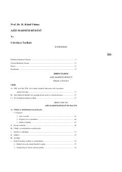

AMAziz Mahmud Hudayining hayoti va Celvetiyye tarikat tarixi haqida ilmiy tadqiqot.
Ushbu kitob buyuk tasavvuf namoyandasi Aziz Mahmud Hudayining hayoti, ilmiy va tasavvufiy shaxsiyati hamda Celvetiyye tarikatining tarixi va odoblarini o'rganishga bag'ishlangan. Muallif Prof. Dr. H. Kâmil Yılmaz asarda Hudayining faoliyati, asarlari va jamiyatdagi ta'sirini keng yoritib bergan.